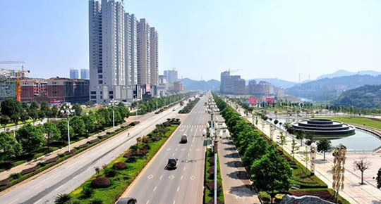

国务院创新农村基础设施投融资体制机制指导意见
 1425
1425
 2018-09-08
安徽省合肥高新技术产业开发区
2018-09-08
安徽省合肥高新技术产业开发区
1425
2018-09-08
安徽省合肥高新技术产业开发区
一、政策介绍
随着信息网络技术迅猛发展和移动智能终端广泛普及，移动互联网以其泛在、连接、智能、普惠等突出优势，有力推动了互联网和实体经济深度融合，已经成为创新发展新领域、公共服务新平台、信息分享新渠道。为深入贯彻落实习近平总书记网络强国战略思想，促进我国移动互联网健康有序发展，现提出如下意见。
一、重要意义和总体要求
1.重要性和紧迫性。党的十八大以来，以习近平同志为核心的党中央高度重视网络安全和信息化工作，成立中央网络安全和信息化领导小组，作出一系列重大决策部署，有力推动了网信事业特别是移动互联网健康发展，对方便人民群众生产生活、促进经济社会发展、维护国家安全发挥了重要作用。当前，随着互联网技术、平台、应用、商业模式与移动通信技术紧密结合，移动互联网新技术快速演进、新应用层出不穷、新业态蓬勃发展，工具属性、媒体属性、社交属性日益凸显，生态系统初步形成、加速拓展，越来越成为人们学习、工作、生活的新空间。与此同时，移动互联网安全威胁和风险日渐突出，并向经济、政治、文化、社会、生态等领域传导渗透。面对新形势新挑战，移动互联网发展管理工作还存在一些短板：体制机制有待完善，法制建设仍显滞后，政策扶持力度不够，自主创新能力不足，核心技术亟需突破，管理基础相对薄弱，企业主体责任落实不到位，安全策略不完备等。这些问题已经制约移动互联网健康有序发展，必须高度重视、抓紧解决。
2.指导思想。全面贯彻党的十八大和十八届三中、四中、五中、六中全会精神，以邓小平理论、"三个代表"重要思想、科学发展观为指导，深入贯彻习近平总书记系列重要讲话精神和治国理政新理念新思想新战略，紧紧围绕统筹推进"五位一体"总体布局和协调推进"四个全面"战略布局，积极践行新发展理念，坚持以人民为中心的发展思想，坚持鼓励支持和规范发展并行、政策引导和依法管理并举、经济效益和社会效益并重，凝聚共识、防范风险、争取人心、保障安全、促进发展，鼓励和支持技术创新，激发和保护企业活力，不断增强发展内生动力，全方位推进移动互联网健康有序发展，更好服务党和国家事业发展大局，让移动互联网发展成果更好造福人民。
3.基本原则。坚持发展为民，充分发挥移动互联网优势，缩小数字鸿沟，激发经济活力，为人民群众提供用得上、用得起、用得好的移动互联网信息服务；坚持改革引领，完善市场准入，规范竞争秩序，优化发展环境，全面释放创新活力和市场能量；坚持创新为要，强化目标导向、问题导向、效果导向，发挥管理主体、运营主体、使用主体作用，全面为推进理念、机制、手段等创新；坚持内容为本，创新内容生产，拓展分享渠道，净化交互生态；坚持分类指导，对移动互联网信息服务实行分类管理；坚持安全可控，全面排查、科学评估、有效防范和化解移动互联网迅猛发展带来的风险隐患，切实保障网络数据、技术、应用等安全。
二、所在基地

河南省郑州航空港经济综合试验区
作为全国首个航空经济试验区，通过启动实施"智汇郑州·1125聚才计划"，目前拥有院士3名，"千人计划"专家32名。引进了企业孵化、支撑服务、科技金融、聚才引智等一批双创平台，建立集高端培训、创业资讯、知识产权、信息交流于一体的示范基地双创服务集群中心；积极开展与高校的协同创新，创办郑州航空产业技术创新研究院，重大装备制造郑州研究院。规划布局只能终端、生物医药、精密制造、大数据等战略性新兴产业。